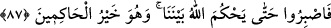

“Ve her yolun başına oturup da tehdit ederek” Şeytan gibi, inananları tehdid ederek,
korkutarak din yollarından herhangi birinin başına oturmayınız. Çünkü şeytan: “Öyle ise
beni azdırmana karşılık, and içerim ki, ben de onları saptırmak için senin doğru
yolunun üstüne oturacağım.” (el-A’raf, 7/16) demişti.
Ayette zihin, her şeyi hesaba katsın ve geniş düşünsün diye ne ile tehdid ettikleri
belirtilmemiştir.
“Sıratullah” (Allah’ın yolu), her ne kadar tek ise de mârifetler, hadler ve hükümler
gibi şubelere ayrılır.
Medyen halkı, bir kimsenin dinin bir emrini yerine getirmeye çalıştığını görünce
hemen ona mâni olurlardı. Denildiğine göre gözetleme yerlerine otururlar, Şuayb (a.s.)’ı
soranlara: “O yalancıdır. Sakın seni dininden çevirmesin.” derler ve inananları tehdid
ederlerdi. Onların yol kesicilik yaptıkları da nakledilmiştir.
O’nun yollarına “inananları” üzerine oturduğunuz “Allah’ın yolundan çevirmeye”
men etmeye ve uzaklaştırmaya “ve” bir kısım şüpheler ileri sürerek veya insanlara onu
eğri diye tanıtarak “onu” Allah yolunu “eğriltmeye” eğri büğrü ve haktan sapmış hale
getirmeye “çalışmayın.” bunun peşine düşmeyin. Çünkü o yol, bütün eğrilik
şaibelerinden uzaktır.
Burada çeşitli hile ve desiselerle Allah’a vuslat yolunu kesen ve bu yola sülûk etmek
isteyenlere mani olan kimselere işaret vardır. Bunlar kendilerine bu yolu kapadıkları
gibi bâtıl iddialar ileri sürerek bu ulvî yolu eğri göstermek istemişlerdir. Günahların en
şerlisi sadece işleyende kalmayıp kendisinden başkalarına da sirayet edendir. Çünkü
başkasına sirayet ettirmenin zararı, sirayet ettirmedeki tesiri kadar o işi ilk yapana
döner.
“Düşünün ki siz azdınız, O sizi” neslinize ve malınıza bereket vererek “çoğalttı”
zayıflığınız kuvvete ve fakirliğiniz zenginliğe dönüştü. “ve bakın” Nûh kavmi ve
onlardan sonraki Âd, Semûd ve benzeri kendilerinden önce geçmiş ümmetlerden
“bozguncuların sonu nasıl oldu!” onlardan ibret alın ve onların gittiği yollardan
gitmekten sakının.
87. Eğer içinizden bir gurup benimle gönderilene inanır, bir gurup da inanmazsa,
Allah aranızda hükmedinceye kadar bekleyin. O hakimlerin en iyisidir.
“Eğer içinizden bir gurup benimle gönderilene” dinin esaslarına ve hükümlerine
“inanmış, bir grup da” ona “inanmamış ise...”
Farsça tefsirde şöyle denilmiştir: Medyen’den bir topluluk Şuayb’e iman ettiler.
Çoğunluk olan diğer topluluk ise inkar etti. “Bizim gücümüz ve servetimiz var,